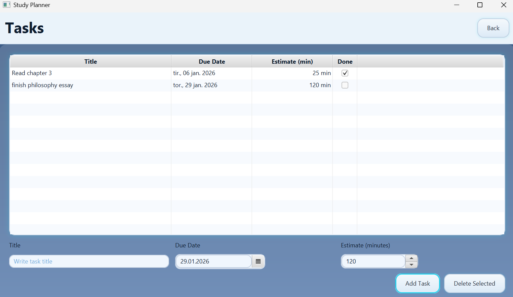

Study Planner (JavaFX)
Personal project • 2026
This is a small practice app to learn the basics of Java and JavaFX. It’s not fancy, but it helped me get comfortable with scenes, FXML, controllers, and styling. You can add tasks with a title, due date and time estimate, and mark them as done. It starts on a simple Home screen and then shows a Tasks view with a table and an inline form.
What works now
- Home screen with a button to open the Tasks page
- Inline add form (Title, Due Date, Estimate minutes) with simple validation
- Table with formatted date and a checkbox to mark tasks as completed
- Basic styling using application.css (kept simple on purpose)
- Gradle build (Java 17) with FXML + CSS
What I learned
- How to split UI into FXML views and use controllers to wire up actions
- Binding TableView columns to model properties and formatting cells (e.g., LocalDate)
- Basic input validation and keeping the UI responsive to keyboard use
- Structuring a small JavaFX app and running it with Gradle
How to run (locally)
Open the project folder in your IDE and run the Gradle task. JDK 17 or newer is required.
# From the project root
# Option A: VS Code Gradle Tasks panel → run task 'run'
# Option B: Terminal
./gradlew run
Internet is not required after dependencies are downloaded the first time.
What I’d improve next
- Save tasks to disk (JSON or SQLite) so they persist between sessions
- Filtering and sorting (e.g., by due date or completion)
- Small UI cleanups and a more consistent theme
- Maybe notifications for upcoming deadlines